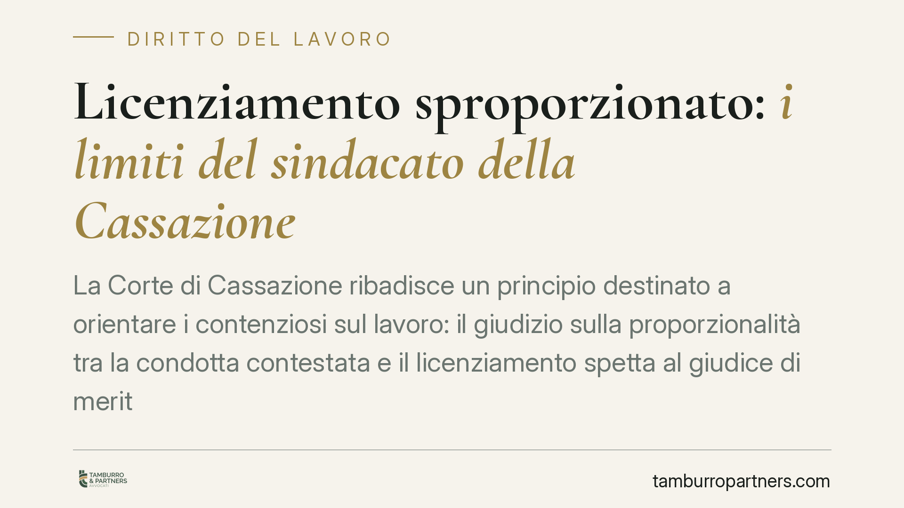

Licenziamento sproporzionato: i limiti del sindacato della Cassazione
La Corte di Cassazione ribadisce un principio destinato a orientare i contenziosi sul lavoro: il giudizio sulla proporzionalità tra la condotta contestata e il licenziamento spetta al giudice di merito. La Suprema Corte interviene solo davanti a vizi motivazionali gravi, non per rileggere i fatti. Un confine netto che pesa sulla strategia difensiva di entrambe le parti.

Il principio ribadito
La Cassazione Civile, Sezione Lavoro, torna su un tema ricorrente: fino a che punto la Suprema Corte può sindacare un licenziamento ritenuto sproporzionato rispetto alla condotta contestata al dipendente.
La risposta è restrittiva. Il giudizio sulla proporzionalità è una valutazione di merito, e come tale appartiene al giudice di primo e secondo grado. La Cassazione non è un terzo grado di giudizio: non riesamina i fatti, non pesa nuovamente le circostanze, non sostituisce la propria valutazione a quella dei giudici che hanno ascoltato le parti e visto le prove.
L'intervento della Corte resta possibile solo in presenza di vizi motivazionali gravi: una motivazione mancante, meramente apparente, o talmente contraddittoria da rendere impossibile ricostruire il ragionamento seguito. Fuori da questi casi, la decisione di merito è intoccabile.
Inquadramento normativo
Il riferimento è l'art. 2119 del codice civile, che consente il recesso senza preavviso quando si verifica "una causa che non consenta la prosecuzione, anche provvisoria, del rapporto". È la cosiddetta giusta causa di licenziamento.
La norma non elenca le condotte rilevanti: usa una clausola generale. Spetta al giudice riempirla di contenuto, valutando la gravità del comportamento in concreto e verificando se la sanzione espulsiva sia proporzionata. Questa operazione — collegare un fatto specifico a un concetto elastico come la "giusta causa" — è per definizione un giudizio di merito.
Da qui il limite del ricorso per cassazione. Ai sensi dell'art. 360 del codice di procedura civile, il ricorso è ammesso per violazione di legge o per omesso esame di un fatto decisivo, non per contestare la ricostruzione dei fatti operata dai giudici precedenti. La proporzionalità, in quanto valutazione, sfugge al controllo di legittimità salvo che il percorso logico sia radicalmente carente.
Cosa cambia in concreto
Per il lavoratore che ha subìto un licenziamento ritenuto eccessivo, il messaggio è chiaro: la partita si gioca nei gradi di merito. È in primo grado e in appello che vanno costruite le prove, evidenziate le circostanze attenuanti, documentata la sproporzione tra il fatto e la sanzione.
Arrivare in Cassazione sperando di ribaltare una valutazione sfavorevole di proporzionalità è, nella maggioranza dei casi, una strada senza uscita. La Corte non riapre il merito.
Per il datore di lavoro vale il rovescio della medaglia. Una motivazione ben costruita nei gradi di merito, che spieghi con chiarezza perché la condotta ha reso impossibile la prosecuzione del rapporto, è difficilmente aggredibile in sede di legittimità.
Il punto critico, per entrambe le parti, è quindi la qualità della motivazione del provvedimento e delle decisioni di merito. Un licenziamento intimato con contestazioni generiche, o una sentenza motivata in modo apparente, restano vulnerabili. Al contrario, una ricostruzione dettagliata e coerente consolida la posizione.
Cosa fare in concreto
- Curare la fase di merito. Concentrare risorse ed energie difensive nel primo e secondo grado, dove la valutazione di proporzionalità viene effettivamente compiuta.
- Documentare la sproporzione. Se si contesta un licenziamento eccessivo, raccogliere prove su precedenti disciplinari, prassi aziendali, sanzioni applicate in casi analoghi.
- Verificare la contestazione disciplinare. Controllare che l'addebito sia specifico, tempestivo e collegato a un fatto preciso: una contestazione generica indebolisce l'intero provvedimento.
- Valutare realisticamente il ricorso in Cassazione. Prima di impugnare, verificare con il legale se esiste un effettivo vizio di legittimità o solo un dissenso sul merito.
- Motivare in modo completo. Per il datore, redigere una lettera di licenziamento che spieghi con chiarezza le ragioni del recesso e il nesso con la giusta causa.
Consigliamo di impostare la difesa fin dalla prima fase con questa consapevolezza: la Cassazione controlla la tenuta logico-giuridica della decisione, non la sua opportunità. Rimandare la costruzione delle prove al giudizio di legittimità significa, quasi sempre, arrivare troppo tardi.
Disclaimer
Contributo informativo a cura di Tamburro & Partners - Avv. Giuseppe Tamburro. Non costituisce parere legale.
Ogni storia di lavoro ha i suoi tempi.
Se gestisci HR e vuoi un confronto su contenzioso, ispezioni o licenziamenti, scrivi allo studio. Ti rispondiamo entro un giorno lavorativo.